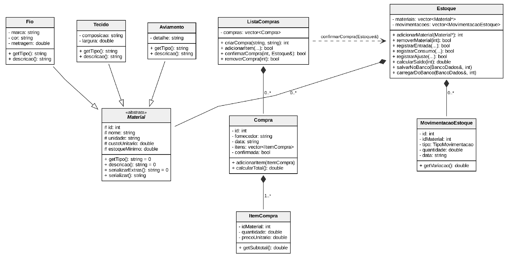
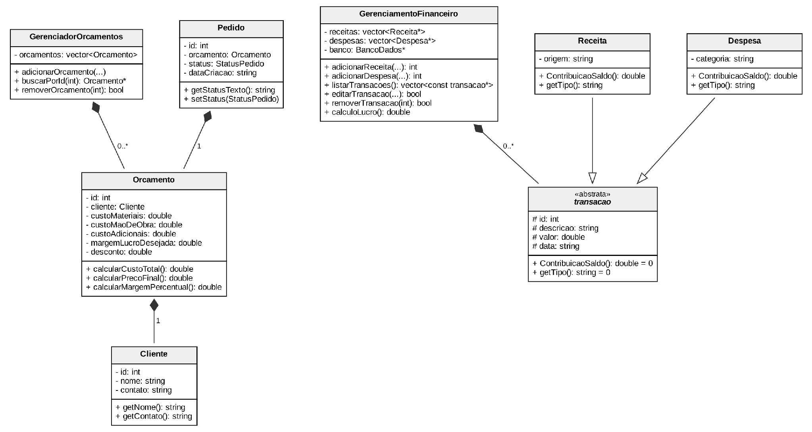
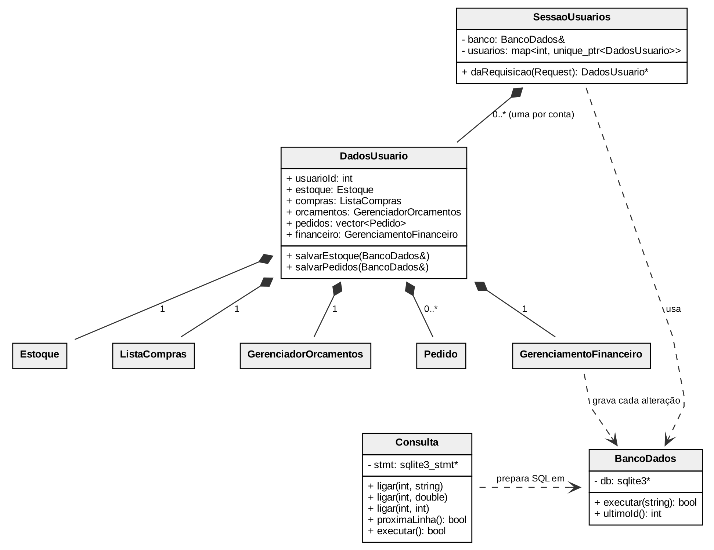

Login, painel inicial, estoque, compras, orçamento e quadro de pedidos.
Resumo
O Tear é uma aplicação de gestão e precificação para a produção artesanal, como peças de crochê e amigurumi. O sistema reúne estoque, compras, orçamentos, acompanhamento de pedidos e gestão financeira, com os dados isolados por conta de usuário.
As regras de negócio e a persistência ficam em um back-end em C++17, que grava os dados em SQLite. A interface foi feita em React e se comunica com o servidor por HTTP, trocando dados em JSON.
Do ponto de vista da disciplina, o objetivo foi aplicar na prática encapsulamento, herança, polimorfismo, abstração e uso de ponteiros e referências, além de operações de CRUD em banco relacional e trabalho em equipe com Git e GitHub.
Funcionalidades
Arquitetura
O sistema é dividido em back-end e front-end. A interface envia as ações do usuário por requisições HTTP, o servidor aplica as regras nos objetos correspondentes e devolve o resultado em JSON. Cálculo de saldo, precificação e validações ficam todos no back-end.
Todos os dados ficam em um único arquivo SQLite, com oito tabelas criadas pelo próprio código C++ ao iniciar o servidor. Cada linha guarda o usuario_id de quem a criou, e toda consulta é filtrada por ele.
| Camada | Tecnologia | Motivo |
|---|---|---|
| Back-end | C++17 | Linguagem da disciplina, com foco em orientação a objetos |
| Back-end | cpp-httplib | Servidor HTTP e rotas em um único arquivo de cabeçalho |
| Back-end | nlohmann/json | Conversão entre objetos C++ e JSON |
| Banco de dados | SQLite 3 | Banco em arquivo único, compilado junto com o programa |
| Compilação | CMake | O mesmo projeto compila no Windows e no Linux |
| Front-end | React 18, Vite e React Router | Interface com componentes reutilizáveis |
Diagrama de classes
O modelo foi dividido em três figuras. Notação UML: - privado, # protegido, + público, = 0 método virtual puro; triângulo vazio indica herança, losango cheio indica composição e linha tracejada indica dependência.



Orientação a objetos
- Encapsulamento: os atributos são
privateouprotectede só mudam por métodos que validam os dados. Os setters deOrcamento, por exemplo, não aceitam valores negativos. - Abstração e herança:
Materialé abstrata e tem as filhasFio,TecidoeAviamento. O mesmo acontece comtransacao, especializada emReceitaeDespesa. - Polimorfismo por sobrescrita: o estoque guarda os materiais em um
std::vector<Material*>e chamadescricao()sem saber o tipo de cada um. - Polimorfismo por sobrecarga:
Consulta::ligar()tem uma versão para texto, uma para inteiro e uma para número decimal. - Ponteiros e referências:
buscarPorId()devolvenullptrquando não encontra, econfirmarCompra()recebe o estoque por referência para alterá-lo sem cópia. - Composição:
Compracontém seus itens,Orcamentocontém umClienteeDadosUsuarioreúne os módulos de cada conta. - Construtores e destrutores:
BancoDadosabre a conexão no construtor e fecha no destrutor. Onde a cópia causaria problema, o construtor de cópia é desabilitado com= delete.
class Material {
protected:
int id;
std::string nome;
double custoUnitario;
public:
virtual std::string getTipo() const = 0;
virtual std::string descricao() const = 0;
};
class Fio : public Material {
private:
std::string marca, cor;
double metragem;
public:
std::string getTipo() const override { return "FIO"; }
};
Trecho de backend/include/Material.h.
Vídeo
Apresentação do projeto, partes do código com orientação a objetos e o sistema rodando.
Equipe
| Integrante | Módulos |
|---|---|
| Maria Gabriela | Estoque e compras |
| David Everton | Clientes, orçamentos e pedidos (kanban) |
| Heloísa Maria | Financeiro, painel inicial, contas de usuário e banco de dados |
| Kailani Yoná | Projetos e produção |
Cada integrante fez a parte em C++ e as telas em React do seu módulo. A integração foi feita por pull requests para a branch develop.